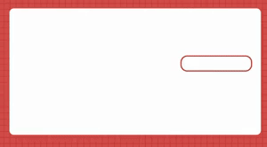

3秒后关闭

H5 WEB v1.7.1
密码登录
归档-时光卷轴
登录
注册
查看公告
最新
系统公告
Web站点更新时间：2025年9月15日 15:12
增加功能：
网页端增加图片尺寸修改更能，上传图片，可以修改自定义想要的图片尺寸大小！可用于图片修改，公告底部可进入！
本站点和APP版本同步新增一键清除本地存储功能，可以将存储在手机本地数据，彻底清除，不留痕迹，网页端会将账号密码清除，没有管理员宝宝后台绑定账号的用户，原注册账号将不能登陆！公告底部可点击一键清除！
本次更新优化了登陆框设计：
优化登陆框，增加账号注册，原有登陆基础上增加注册功能，使用户能够注册账号并登陆，注册的账号仅在手机本地存储，未使用云端数据库存储，不可多台设备APP登陆使用，能够让用户将账号握在自己手里，以防止信息和数据泄露，登陆功能的更改暂时没有设计修改密码功能，如若忘记密码，可以清除站点数据后重新注册账号，如果想永久的使用账号可联系管理员添加注册时的账号密码进行绑定，绑定后可在多台设备使用APP使永久使用，无需注册！ ，保护用户隐私
从2025年9月16日起暂时取消APP，和站点的注册功能，对外开放时间后续关注公告开放，如需登陆请联系管理员宝宝申请！，电脑版登陆UI界重新优化！
本网站为归档时光卷轴，为个人类使用，涉及隐私，未在应用市场发布，未经授权允许禁止转发他人下载使用，网站的使用权仅设计者:~颖~所有，未在网络上公开程序源码，未征得开发者允许禁止解析源码，一经发现未授权和允许转发下载，严肃处理！
如需永久使用账号，可联系管理员进行绑定
隐私声明：本程序类型为H5 Web程序
本软件的一切知识产权，以及与本软件相关的所有信息内容，包括但不限于：文字表述及其组合、图标、图饰、图像、图表、色彩、界面设计、版面框架、有关数据、附加程序、印刷材料或电子文档等均为开发者所有，受著作权法和国际著作权条约以及其他知识产权法律法规的保护。
我们努力保障信息安全，以防信息的丢失、不当使用、未经授权阅览或披露。我们使用各种安全技术以保障信息的安全。例如，我们将努力采取加密等安全保护措施，防止用户信息遭到未经授权的访问或修改、泄露、毁损或丢失。我们建立严格的管理制度和流程以保障信息的安全。例如，我们严格限制访问信息的人员范围，并进行审计，要求他们遵守保密义务。
用户必须保证其使用本软件时将遵从国家、地方法律法规、行业惯例和社会公共道德，不会利用本软件进行存储、发布、传播如下信息和内容：违反国家法律法规政策的任何内容（信息）；违反国家规定的政治宣传和/或新闻信息；涉及国家秘密和或安全的信息；封建迷信和/或淫秽、色情、下流的信息或教唆犯罪的信息；博彩有奖、赌博游戏；违反国家民族和宗教政策的信息，防碍互联网运行安全的信息；侵害他人合法权益的信息和/或其他有损于社会秩序、社会治安、公共道德的信息或内容，用户同时承诺不得为他人发布上述不符合国家规定和/或本服务条款约定的信息内容提供任何便利，包括但不限于设置URL、BANNER链接等。
如您对本声明或其他相关事宜有疑问，请根据我们提供的联系方式将您的问题通过邮箱发送至1837601513@qq.com我们将尽快审核所涉问题，十五天内予以回复。
维护＆运营:『廖聪颖』
版权©拥有
:『廖聪颖』
[2024·9] © ICP 未备案
一键清除功能
图片尺寸修改
{kind=link}